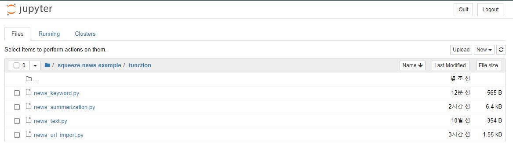
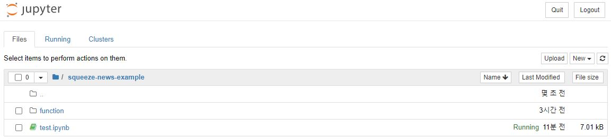

Getting start - Installation
SqueezeNews📰 is tested on Python 3.7+. Follow the installation process.
Installation with pip
SqueezeNews can be installed using pip as follows:
$pip install SqueezeNews
testing example
from SqueezeNews.function import news_text
Installation with Jupyter Notebook
Please download the .py file from the github website.
Please click the .py file button.
Please click the Raw button.
Please download the file through ‘ctrl + s’.
Please download all files through the following process.
This method requires Jupyter Notebook and Anaconda environment.
 Put all .py files in a sub-folder of the currently running code.
Testing your installation
That’s all! You can check that SqueezeNews is correctly installed by starting up python.
Enter the news url link in url variable.
testing example
from function.news_text import text_extraction
from function.news_summarization import summarize
from function.news_keyword import get_keyword
from function.news_url_import import news_url_import
Warning
If you have a lookup error, run the following process.
import nltk
nltk.download('punkt')
url = ''
text = text_extraction(url)
summarize(text)
get_keyword(url, 'en')